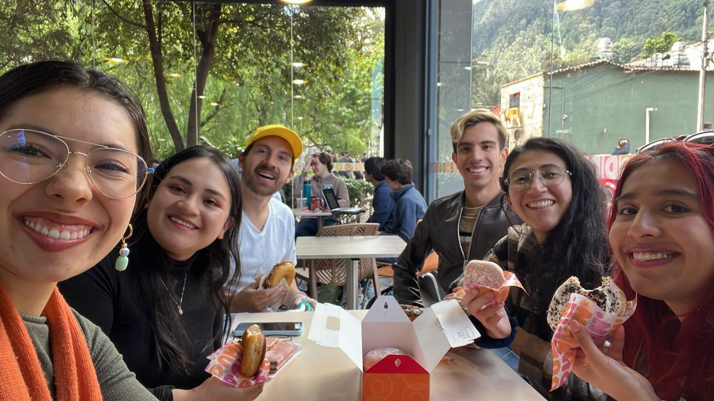
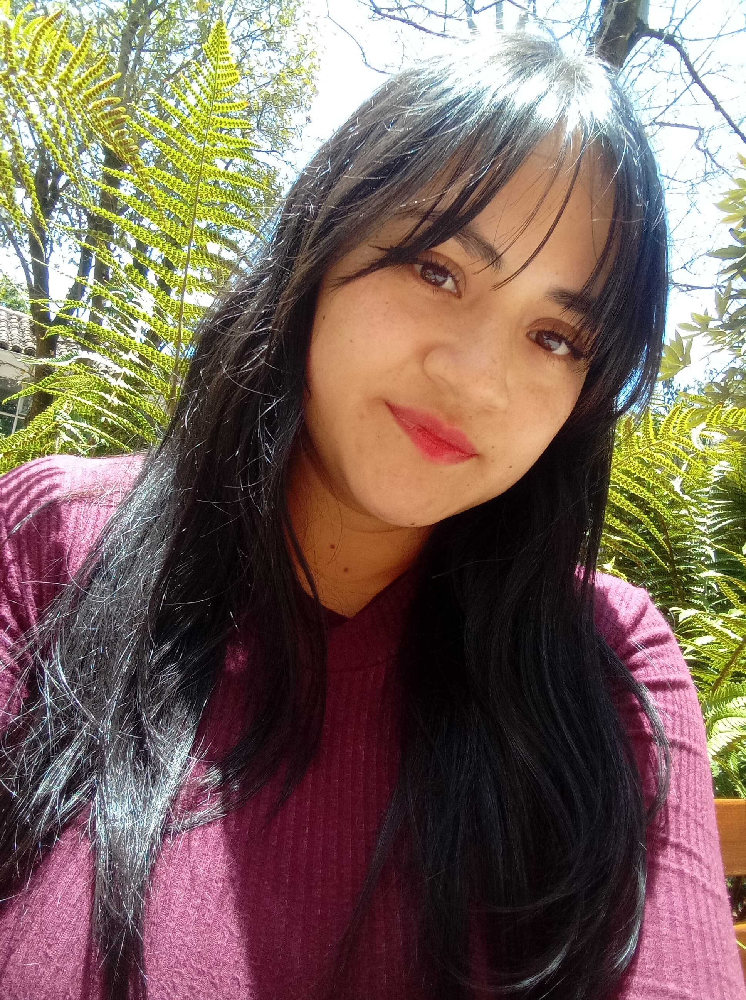
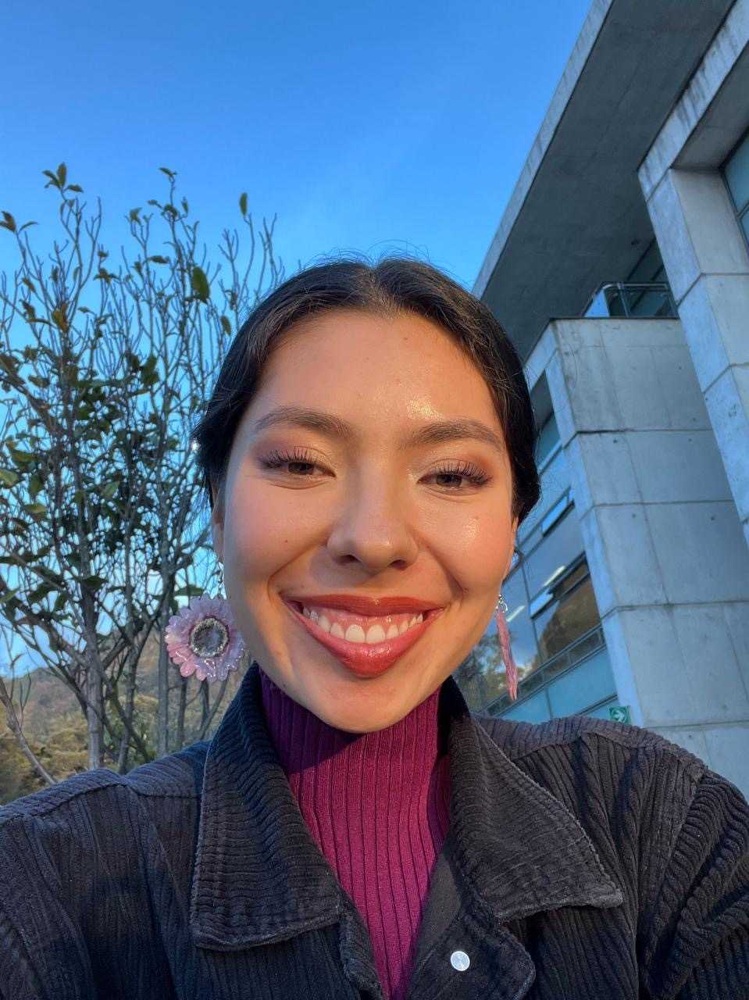
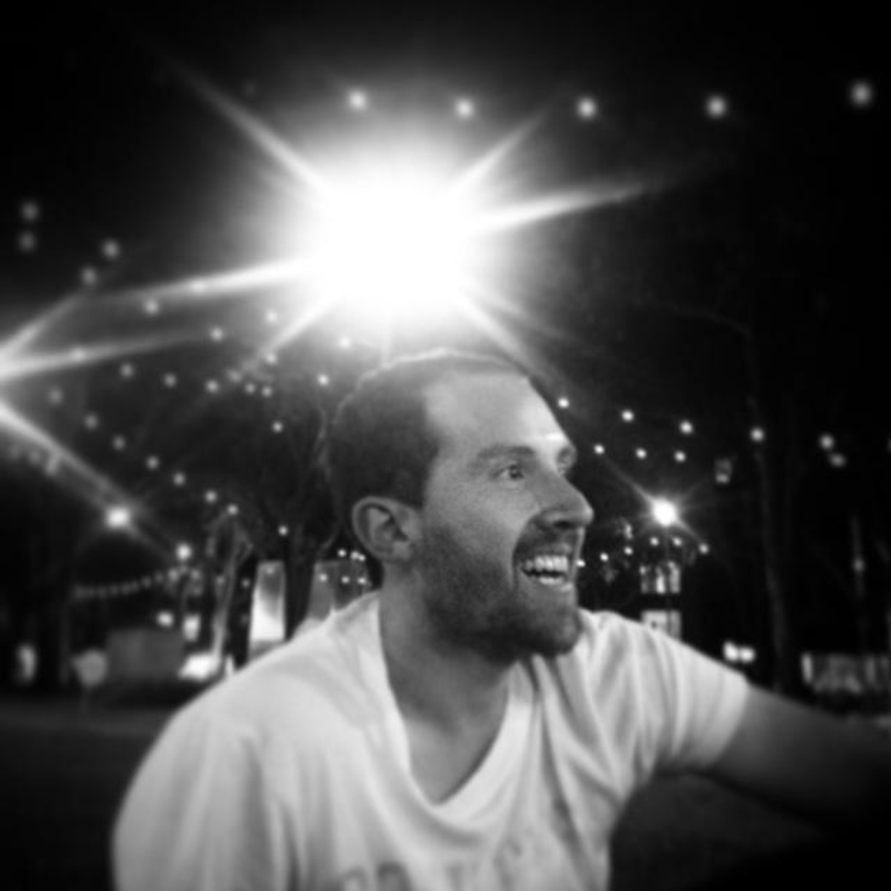
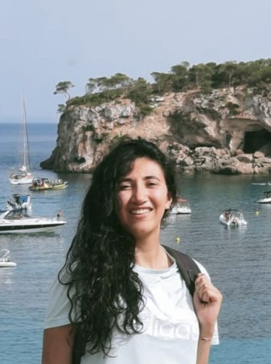

Entrepreneurship
I've had the chance to work togehter with a group of researchers from diverse backgrounds, academic levels and places around the world collaborating to understand the Physics of Aging.
Mentees

Project: Machine Learning Methods for Identifying States in Aging Yeast.
Outcome: Poster presentation at ASCB Cell-Bio 2024 in San Diego
Training: B.Sc. in Physics, Universidad Distrital
Currently:currently applying to PhD programs.
More about Jeimy: Bachelor in Physics from Universidad Distrital Francisco José de Caldas with experience in Python programming and machine learning techniques. Areas of interest include research in cellular biophysics, computational analysis of biological data, and physical modeling applied to living systems.
Jeimy A. Capera Mendivelso
Role: Undergraduate Research Intern, UniAndes, 2024Project: Machine Learning Methods for Identifying States in Aging Yeast.
Outcome: Poster presentation at ASCB Cell-Bio 2024 in San Diego
Training: B.Sc. in Physics, Universidad Distrital
Currently:currently applying to PhD programs.
More about Jeimy: Bachelor in Physics from Universidad Distrital Francisco José de Caldas with experience in Python programming and machine learning techniques. Areas of interest include research in cellular biophysics, computational analysis of biological data, and physical modeling applied to living systems.

Maria del Mar Baracaldo
Role: Undergraduate Student Researcher, Universidad Javeriana, 2025Project: Studying physical properties aging.
Outcome: Developed analysis workflows.
Training: B.Sc. in Bacteriology and Biomedical Engineering (Pontificia Universidad Javeriana)
Currently: B.Sc. in Bacteriology and Biomedical Engineering Student at Pontificia Universidad Javeriana
More about Mar: Bridges biomedical science and engineering to explore neurodegeneration.

Project: Research on changes in diffusion in aging neurons.
Outcome: Poster presentation at ASCB Cell-Bio 2024 in San Diego, CA, Developed segmentation tools for neuronal structures.
Training: B.Sc. in Physics, Universidad de los Andes
Currently: Physics Undergrad at Universidad de los Andes, Bogotá, Colombia.
More about Alejandra: Physics student with a growing interest in neurophysics and biomechanics.
Alejandra Borrero
Role: Summer Student Intern, NYU, 2024Project: Research on changes in diffusion in aging neurons.
Outcome: Poster presentation at ASCB Cell-Bio 2024 in San Diego, CA, Developed segmentation tools for neuronal structures.
Training: B.Sc. in Physics, Universidad de los Andes
Currently: Physics Undergrad at Universidad de los Andes, Bogotá, Colombia.
More about Alejandra: Physics student with a growing interest in neurophysics and biomechanics.

Project: Applying information theory to quantify aging-related changes in cellular systems.
Outcome: Developed theoretical frameworks to study biophysical entropy during aging.
Training: B.Sc. in Engineering, M.Sc. in Physics, PhD in Engineering (Universidad de los Andes)
Currently: PhD in Engineering Student at Universidad de los Andes
About Nestor: Experienced in theoretical modeling and signal processing across biological contexts.
Néstor R. Perico
Role: Graduate Researcher, Uniandes, 2025Project: Applying information theory to quantify aging-related changes in cellular systems.
Outcome: Developed theoretical frameworks to study biophysical entropy during aging.
Training: B.Sc. in Engineering, M.Sc. in Physics, PhD in Engineering (Universidad de los Andes)
Currently: PhD in Engineering Student at Universidad de los Andes
About Nestor: Experienced in theoretical modeling and signal processing across biological contexts.

Project: Simulations of aging cell populations.
Outcome: Poster Session at Engineering Proceedings, 2021, Built and tested computational models of intracellular distributions.
Training: B.Sc. in Physics (Universidad Distrital), M.Sc. in Complex Systems (UIB Mallorca)
Currently:Ph.D. Student at University of Bologna, Italy
About Ivonne: PhD student and (MSCA)COFUND fellow at the university of Bologna from 2025. A multidisciplinary physicist exploring the connection between physics and biology through complex systems. I use mathematical and programming tools to study biological problems, focusing on synthetic biology, surface growth models, gene networks, 3D modeling, big data, oceanography and Lagrangian modeling. In my current work, I apply genome-wide sequencing to identify genes involved in coral biomineralization process.
Ivonne Rojas
Role: Undergraduate Researcher, UniAndes 2020Project: Simulations of aging cell populations.
Outcome: Poster Session at Engineering Proceedings, 2021, Built and tested computational models of intracellular distributions.
Training: B.Sc. in Physics (Universidad Distrital), M.Sc. in Complex Systems (UIB Mallorca)
Currently:Ph.D. Student at University of Bologna, Italy
About Ivonne: PhD student and (MSCA)COFUND fellow at the university of Bologna from 2025. A multidisciplinary physicist exploring the connection between physics and biology through complex systems. I use mathematical and programming tools to study biological problems, focusing on synthetic biology, surface growth models, gene networks, 3D modeling, big data, oceanography and Lagrangian modeling. In my current work, I apply genome-wide sequencing to identify genes involved in coral biomineralization process.
Rashmi Mohotti
Role: Research Intern, NYU, 2024-2025Project: Mechanical behavior of large synthetic GEMs in cells.
Outcome: Ongoing collaboration on Synthetic Big GEMs.
Training: B.Sc. Chemical Engineering, PhD Chemical Engineering (University of Virginia)
Currently:, PhD Student, Chemical Engineering (University of Virginia)
More about Rashmi: Background in chemical and biological systems engineering, focusing on the interface between synthetic particles and living cells.
Andy Duan
Role: Undergraduate Researcher, NYU, 2024-2025Project: Investigating the physical properties of the endoplasmic reticulum in aging yeast cells.
Outcome: Co-developed image analysis workflows
Training: B.Sc. Molecular Biochemistry, NYU
Currently: Molecular Biochemistry Undergrad at NYU
About Andy: Interested in organelle dynamics and the physical state of intracellular compartments during aging.
Stephanie Figueroa-Reyes
Role: Undergraduate Student Researcher, Summer Undergraduate Research Program (SURP) NYU, 2024Project: Cloning and characterization of ER-targeted GEMs in yeast.
Outcome: Validated GEMs constructs and fluorescence localization;
Training: B.Sc. Biology (Cornell University)
Currently: Biology Undergrad at Cornell University and Researcher at the Lammerding Lab.
More about Stephanie: Interested in the cell mechanics of aging and nuclear architecture.
Noah Jaggernauth
Role: Student Intern, NYU, 2023Project: Yeast aging and biophysical measurement of cellular crowding.
Outcome: Assisted in early pipeline validation for GEMs-based analysis.
Training: B.Sc. Biochemistry (CUNY)
Currently: Undergraduate in Biochemistry (CUNY), applying for Graduate School
More about Noah: Developing skills in quantitative biology and experimental design.
Juan José Cárdenas Rey
Role: Undergraduate Researcher, Uniandes, 2024Project: Microscopy-based studies of aging cells.
Outcome: Poster presentation at ASCB Cell-Bio 2024 in San Diego, CA;, Created curated image datasets for aging metrics.
Training: B.Sc. in Microbiology (Universidad de los Andes)
Currently: Microbiology Undergrad at Universidad de los Andes, Bogotá, Colombia.
About Juan José: Focused on cell biology, microscopy, and age-associated processes.
Ingrid T. Gaitán
Role: Undergraduate Researcher, 2025Project: Exploring how aging impacts cell fate decisions through physical and biological mechanisms.
Outcome: Developed a multidisciplinary framework; continuing studies in veterinary medicine.
Training: B.Sc. in Physics (Universidad Distrital), Veterinary Medicine (UPTC)
Currently: Veterinary Medicine Student (UPTC)
About Ingrid: Combines physics and life sciences to study organismal and cellular aging.
Paula Siauchó
Role: Graduate Researcher, 2024Project: Machine Learning Methods to analyze Diffusion Trajectories
Outcome: Contributed methods to analyze the trajectories
Training: B.Sc. Microbiology (Universidad de los Andes), M.Sc. Biological Sciences (Universidad de los Andes)
Currently: Researcher at the Max Planck Institute for Terrestrial Biology
More about Paula: Interested in theoretical biology and computational modeling.
Juan David Quevedo
Role: Undergraduate ResearcherProject: Investigating gene circuits related to stress responses in yeast.
Outcome: Contributed to simulation tools for synthetic biology.
Training: B.Sc. Physics, (Universidad Distrital)
Currently: Undergraduate in Physics (Universidad Distrital)
About Juan David: Interested in theoretical biology and computational modeling.
Luis Carlos Bastidas
Role: Graduate Student Researcher, Uniandes, 2024Project: 3D single-particle tracking in aging yeast cells.
Outcome: Developed analysis tools for intracellular mechanical properties.
Training: B.Sc. Physics, UniAndes, M.Sc. in Physics (Universidad de los Andes)
Currently: M.Sc. in Physics Student (Universidad de los Andes)
More about Luis Carlos: Experienced in optical trapping, tracking, and physical modeling.
Steven Rozo
Role: Undergraduate Research Intern, 2019-2024Project: Developed microfluidic systems for aging studies.
Outcome: Designed and implemented on-chip culturing methods.
Training: B.Sc. in Physics, (Universidad Distrital)
Currently: Electrical Engineering Student at Universidad Nacional de Colombia
About Steven: Combines physics and engineering for experimental biophysics.
Juan Diego Naranjo
Role: Undergraduate Researcher, UniAndes 2023Project: Anomalous diffusion behaviors in aging cells.
Outcome: Characterized cytoplasmic heterogeneity using particle tracking.
Training: B.Sc. in Physics (Universidad Distrital)
Currently: Physics Instructor
About Juan Diego: Focused on stochastic processes in biological systems.
Diana Forero
Role: Undergraduate Researcher, UniAndes 2019,Project: Estimating survival in yeast aging populations.
Outcome: Developed scripts for cell survival quantification.
Training: B.Sc. in Physics (Universidad Distrital)
Currently: B.Sc. in Physics (Universidad Distrital)Physics Instructor.
About Diana: Experienced in data analysis and quantitative microscopy.
Rubén L. Acevedo
Role: Undergraduate Researcher, UniAndes 2018Project: Pressure modeling in confined yeast populations.
Outcome: Poster at Bogotá Microbial Meeting (BoMM, 2021), Paper: Slipstreaming Mother Machine: A Microfluidic Device for Single-Cell Dynamic Imaging of YeastSimulated and interpreted pressure gradients in microfluidics; currently Instructor at MBS
Training: B.Sc. in Physics (Universidad de los Andes)
Currently:Physics Instructor at MBS.
About Rubén: Combines physics teaching with modeling of living systems.
Ivón Acosta
Role: Undergraduate Researcher, UniAndes 2018Project: Multiphysics simulations of microfluidic devices using COMSOL.
Outcome: Poster at COMSOL Conference 2020 in Boston, MA, Paper: Slipstreaming Mother Machine: A Microfluidic Device for Single-Cell Dynamic Imaging of Yeast; currently Physics Instructor at GCBS Bogotá
Training: B.Sc. in Physics (Universidad Distrital),
Currently: Physics Instructor at GCBS (Gimnasio Campestre Beth Shalom).
More about Ivon: Specializes in simulation and modeling for biological device design.